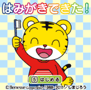
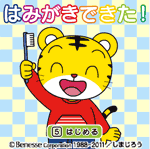

■遊び方
決定ﾎﾞﾀﾝで次に進みます｡
※音声つきです｡ﾏﾅｰﾓｰﾄﾞを解除してお使いください｡
ﾀﾞｳﾝﾛｰﾄﾞ
◆N903､N904のかた
ﾀﾞｳﾝﾛｰﾄﾞ

|
はみがき できた! |
|
 |
|
歯みがきができたら､がんばったごほうびとして遊ぶｼﾙｴｯﾄｸｲｽﾞです｡お子さんの歯みがきへの意欲ｱｯﾌﾟに役立ちます｡【Flash 81KB】 ■遊び方 決定ﾎﾞﾀﾝで次に進みます｡ ※音声つきです｡ﾏﾅｰﾓｰﾄﾞを解除してお使いください｡ |
|
◆N903､N904以外のかた ﾀﾞｳﾝﾛｰﾄﾞ ◆N903､N904のかた ﾀﾞｳﾝﾛｰﾄﾞ |